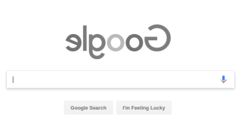

Witchcraft

Think Greasemonkey for developers.
Witchcraft is a Google Chrome extension that allows loading custom JavaScript and CSS scripts right from the file system, automatically injecting them into selected pages.
It works by matching the current page domain against script file names available in the scripts folder. For instance, if one navigates to https://www.google.com, Witchcraft will try to load and run google.com.js and google.com.css.
window.addEventListener("load" => {
document.querySelectorAll("img")
.forEach(img => img.style.transform = "scaleX(-1)");
});
img {
filter: grayscale(100%);
}
And the result is this:
It also tries all domain levels. For instance, if one accesses https://gist.github.com, Witchcraft will try to load, in this order: com.js, github.com.js and gist.github.com.js... and the same goes for CSS. All domain levels for which a script is found will be loaded, not just the first one.
Whenever you edit or create new scripts, there's no need to reload anything other than the page where the scripts are supposed to run. It makes it way easier than other popular scripting tools, like Greasemonkey or Tampermonkey.
Witchcraft works on Windows, Mac and Linux.
Made by Lucio Paiva - July 2018
View source on GitHub